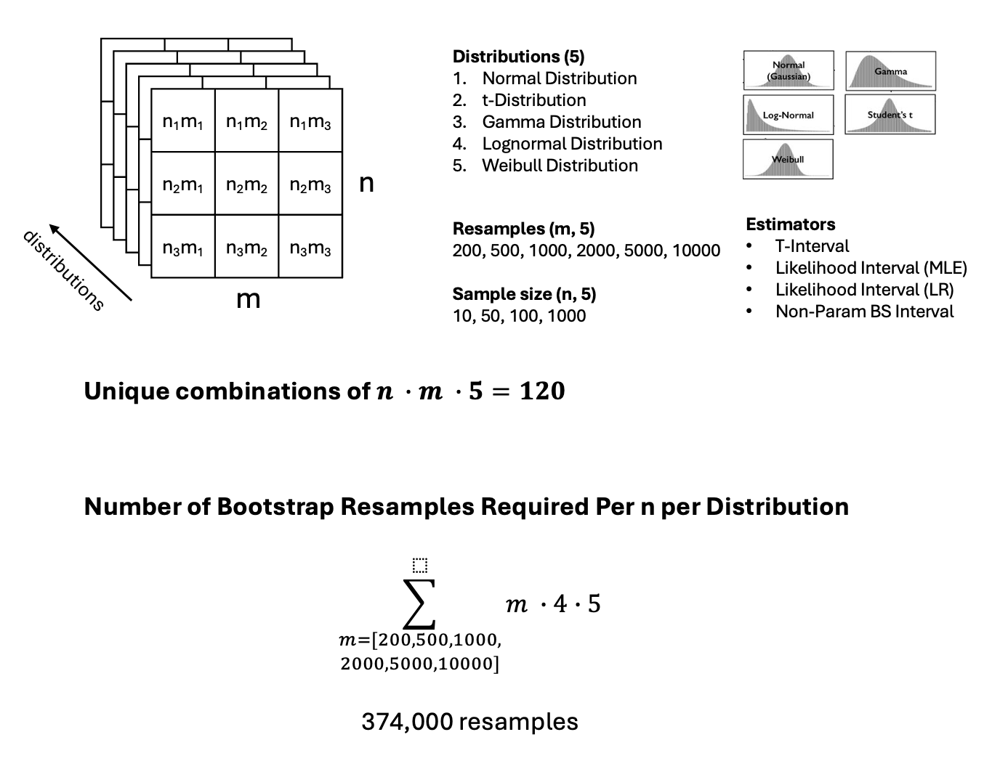
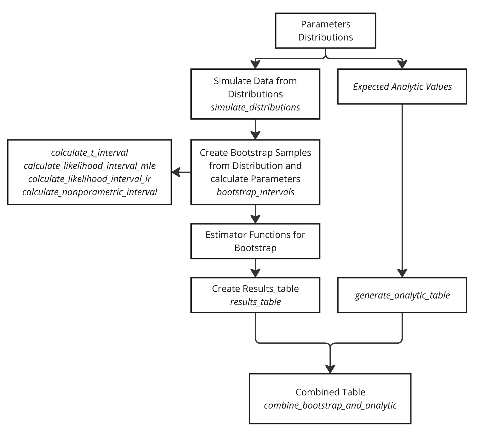

set.seed(123)
m_list <- list(200, 500, 1000, 2000, 5000, 10000) # number of simulations
#m_list <- list(20, 50, 100, 200, 500, 1000) # number of simulations
n_list <- list(10, 50, 100, 1000) # sample sizeBootstrap_Simulation
Aim
To find the smallest number of simulations (m) and sample size (n) needed to accurately calculate bootstrap parameters for different distributions with known parameters.

Methods

Parameters
Distributions of Interest
Normal Distribution
The probability density function (PDF) of a normal distribution is given by:
\[ f(x; \mu, \sigma) = \frac{1}{\sigma \sqrt{2\pi}} e^{-\frac{(x - \mu)^2}{2\sigma^2}} \]
where ( ) is the mean and ( ) is the standard deviation.t-Distribution
The PDF of the t-distribution is:
\[ f(x; \nu) = \frac{\Gamma\left(\frac{\nu+1}{2}\right)}{\sqrt{\nu\pi} \Gamma\left(\frac{\nu}{2}\right)} \left(1 + \frac{x^2}{\nu}\right)^{-\frac{\nu+1}{2}} \]
where ( ) is the degrees of freedom and ( ) is the gamma function.Gamma Distribution
The PDF of the gamma distribution is:
\[ f(x; \alpha, \beta) = \frac{\beta^\alpha x^{\alpha-1} e^{-\beta x}}{\Gamma(\alpha)} \]
where ( ) is the shape parameter and ( ) is the rate parameter.Lognormal Distribution
The PDF of the lognormal distribution is:
\[ f(x; \mu, \sigma) = \frac{1}{x \sigma \sqrt{2\pi}} e^{-\frac{(\ln x - \mu)^2}{2\sigma^2}} \]
where ( ) and ( ) are the mean and standard deviation of the variable’s natural logarithm.Weibull Distribution
The PDF of the Weibull distribution is:
\[ f(x; \lambda, k) = \frac{k}{\lambda} \left(\frac{x}{\lambda}\right)^{k-1} e^{-\left(\frac{x}{\lambda}\right)^k} \]
where ( ) is the scale parameter and ( k ) is the shape parameter.
Simulate Distributions
library(MASS)
# Set params here
simulate_distributions <- function(distribution, n) {
switch(distribution,
"normal" = rnorm(n, mean = 0, sd = 1),
"t" = rt(n, df = 10),
"gamma" = rgamma(n, shape = 2, rate = 1),
"lognormal" = rlnorm(n, meanlog = 0, sdlog = 1),
"weibull" = rweibull(n, shape = 2, scale = 1))
}
distributions <- c("normal", "t", "gamma", "lognormal", "weibull")Estimators of Interest
1) T-Interval
The t-interval is calculated as the 2.5th and 97.5th percentiles of the bootstrap sample means:
\[ \text{T-Interval} = \text{Quantile}(\text{means}, \{0.025, 0.975\}) \]
2) Likelihood Interval Based on MLE
The likelihood interval based on the maximum likelihood estimate (MLE) uses the sample mean (( )) and the standard error (( SE )):
\[ \text{MLE} = \frac{1}{n} \sum_{i=1}^n x_i \]
\[ SE = \frac{\text{SD}(\text{data})}{\sqrt{n}} \]
The interval is then:
\[ \text{Likelihood Interval (MLE)} = \left[ \text{MLE} - 1.96 \times SE, \text{MLE} + 1.96 \times SE \right] \]
3) Likelihood Interval Based on Likelihood Ratio
The likelihood interval based on the likelihood ratio uses the negative log-likelihood function: \[ \ell(\mu) = -\sum_{i=1}^n \log \left( f(x_i; \mu, \sigma) \right) \]
Where ( f(x_i; , ) ) is the normal PDF:
\[ f(x_i; \mu, \sigma) = \frac{1}{\sqrt{2\pi}\sigma} \exp\left( -\frac{(x_i - \mu)^2}{2\sigma^2} \right) \]
The MLE for ( ) minimizes ( () ):
\[ \hat{\mu} = \arg\min_{\mu} \ell(\mu) \]
The likelihood interval is calculated as:
\[ \text{Likelihood Interval (Likelihood Ratio)} = \left[ \hat{\mu} - 1.96 \times SE, \hat{\mu} + 1.96 \times SE \right] \]
4) Non-Parametric Bootstrap Interval
The non-parametric bootstrap interval is calculated as the 2.5th and 97.5th percentiles of the bootstrap sample means:
\[ \text{Non-Parametric Bootstrap Interval} = \text{Quantile}(\text{means}, {0.025, 0.975}) \]
Functions for Estimators
# 1) T-Interval
calculate_t_interval <- function(means) {
quantile(means, c(0.025, 0.975))
}
# 2) Likelihood Interval Based on MLE
calculate_likelihood_interval_mle <- function(data) {
mle <- mean(data)
n <- length(data)
se <- sd(data) / sqrt(n)
c(mle - 1.96 * se, mle + 1.96 * se)
}
# 3) Likelihood Interval Based on Likelihood Ratio
calculate_likelihood_interval_lr <- function(data) {
log_likelihood <- function(mean) {
-sum(dnorm(data, mean = mean, sd = sd(data), log = TRUE))
}
mle_mean <- optimize(log_likelihood, interval = range(data))$minimum
n <- length(data)
se <- sd(data) / sqrt(n)
c(mle_mean - 1.96 * se, mle_mean + 1.96 * se)
}
# 4) Non-Parametric Bootstrap Interval
calculate_nonparametric_interval <- function(means) {
quantile(means, c(0.025, 0.975))
}Expected Analytic Values
# Define expected analytic values for each distribution, calculating mean and SE
expected_analytic_values <- function(dist_name, n) {
switch(dist_name,
"normal" = list(mean = 0, se = 1 / sqrt(n)),
"t" = list(mean = 0, se = sqrt(10 / (10 - 2)) / sqrt(n)), # SE for t with df = 10
"gamma" = list(mean = 2 / 1, se = sqrt(2 / (1^2)) / sqrt(n)), # Shape=2, Rate=1
"lognormal" = list(mean = exp(0 + (1^2) / 2), se = sqrt((exp(1^2) - 1) * exp(2 * 0 + 1^2)) / sqrt(n)),
"weibull" = list(mean = 2 * gamma(1 + 1 / 2), se = sqrt((2^2) * (gamma(1 + 2 / 2) - (gamma(1 + 1 / 2)^2))) / sqrt(n))
)
}
# Generate a table of analytic values
generate_analytic_table <- function(m_list, n_list, distributions) {
analytic_table <- do.call(rbind, lapply(n_list, function(n_value) {
do.call(rbind, lapply(distributions, function(dist_name) {
analytic_values <- expected_analytic_values(dist_name, n_value)
analytic_mean <- analytic_values$mean
analytic_se <- analytic_values$se
analytic_t_interval <- c(analytic_mean - 1.96 * analytic_se, analytic_mean + 1.96 * analytic_se)
data.frame(
n = n_value,
distribution = dist_name,
analytic_mean = analytic_mean,
analytic_se = analytic_se,
analytic_t_interval_lower = analytic_t_interval[1],
analytic_t_interval_upper = analytic_t_interval[2]
)
}))
}))
return(analytic_table)
}
analytic_table <- generate_analytic_table(m_list, n_list, distributions)
# Display the analytic table
print(head(analytic_table,5)) n distribution analytic_mean analytic_se analytic_t_interval_lower
1 10 normal 0.000000 0.3162278 -0.6198064
2 10 t 0.000000 0.3535534 -0.6929646
3 10 gamma 2.000000 0.4472136 1.1234614
4 10 lognormal 1.648721 0.6834306 0.3091972
5 10 weibull 1.772454 0.2929859 1.1982015
analytic_t_interval_upper
1 0.6198064
2 0.6929646
3 2.8765386
4 2.9882453
5 2.3467062Bootstrap Function
# Usage within the bootstrap_intervals function
bootstrap_intervals <- function(data, m) {
n <- length(data)
means <- numeric(m)
for (i in 1:m) {
sample_data <- sample(data, size = n, replace = TRUE)
means[i] <- mean(sample_data)
}
list(
t_interval = calculate_t_interval(means),
likelihood_interval_mle = calculate_likelihood_interval_mle(data),
likelihood_interval_lr = calculate_likelihood_interval_lr(data),
nonparametric_interval = calculate_nonparametric_interval(means)
)
}Iterate through all combinations of each distribution
results <- list()
for (m in m_list) {
for (n in n_list) {
for (dist_name in distributions) {
set.seed(123) # Ensure reproducibility
data <- simulate_distributions(dist_name, n)
intervals <- bootstrap_intervals(data, m)
results[[paste("m", m, "n", n, dist_name, sep = "_")]] <- intervals
}
}
}Bootstrap Results
# Define expected parameter values for each distribution
distribution_params <- list(
normal = list(mean = 0, sd = 1),
t = list(df = 10),
gamma = list(shape = 2, rate = 1),
lognormal = list(meanlog = 0, sdlog = 1),
weibull = list(shape = 2, scale = 1)
)
# Convert results list to a data frame with parameter values
results_table <- do.call(rbind, lapply(names(results), function(name) {
# Extract m, n, and distribution from the name
split_name <- strsplit(name, "_")[[1]]
m_value <- as.numeric(split_name[2])
n_value <- as.numeric(split_name[4])
dist_name <- split_name[5]
# Extract intervals
intervals <- results[[name]]
# Extract parameters for the distribution
params <- distribution_params[[dist_name]]
BS_mean <- mean(intervals$t_interval)
# Create a row
data.frame(
m = m_value,
n = n_value,
distribution = dist_name,
expected_params = paste(names(params), unlist(params), sep = "=", collapse = ", "),
bs_mean = BS_mean,
t_interval_lower = intervals$t_interval[1],
t_interval_upper = intervals$t_interval[2],
likelihood_mle_lower = intervals$likelihood_interval_mle[1],
likelihood_mle_upper = intervals$likelihood_interval_mle[2],
likelihood_lr_lower = intervals$likelihood_interval_lr[1],
likelihood_lr_upper = intervals$likelihood_interval_lr[2],
nonparametric_lower = intervals$nonparametric_interval[1],
nonparametric_upper = intervals$nonparametric_interval[2]
)
}))
# Display the table
print(head(results_table,5)) m n distribution expected_params bs_mean t_interval_lower
2.5% 200 10 normal mean=0, sd=1 0.08382257 -0.4757399
2.5%1 200 10 t df=10 0.08037697 -0.5735814
2.5%2 200 10 gamma shape=2, rate=1 1.77881286 0.9761261
2.5%3 200 10 lognormal meanlog=0, sdlog=1 1.76782387 0.6961665
2.5%4 200 10 weibull shape=2, scale=1 0.79270562 0.5438618
t_interval_upper likelihood_mle_lower likelihood_mle_upper
2.5% 0.6433850 -0.5165358 0.6657871
2.5%1 0.7343354 -0.7777221 0.8275486
2.5%2 2.5814996 0.9101920 2.7482641
2.5%3 2.8394813 0.5287796 2.8507046
2.5%4 1.0415495 0.4887924 1.0513919
likelihood_lr_lower likelihood_lr_upper nonparametric_lower
2.5% -0.5165358 0.6657871 -0.4757399
2.5%1 -0.7777221 0.8275486 -0.5735814
2.5%2 0.9101920 2.7482641 0.9761261
2.5%3 0.5287796 2.8507046 0.6961665
2.5%4 0.4887924 1.0513919 0.5438618
nonparametric_upper
2.5% 0.6433850
2.5%1 0.7343354
2.5%2 2.5814996
2.5%3 2.8394813
2.5%4 1.0415495# Save the table as a CSV file
write.csv(results_table, "results_table_with_params.csv", row.names = FALSE)Combine Expected and Analytic Values
# Function to combine bootstrap and analytic tables
combine_bootstrap_and_analytic <- function(bootstrap_results, analytic_table) {
# Iterate through bootstrap results and match with analytic values
combined_table <- do.call(rbind, lapply(names(bootstrap_results), function(name) {
# Extract m, n, and distribution from the name
split_name <- strsplit(name, "_")[[1]]
m_value <- as.numeric(split_name[2])
n_value <- as.numeric(split_name[4])
dist_name <- split_name[5]
# Extract bootstrap intervals
intervals <- bootstrap_results[[name]]
BS_mean <- mean(intervals$t_interval)
# Match with analytic values
analytic_row <- analytic_table[
analytic_table$n == n_value & analytic_table$distribution == dist_name, ]
# Create a combined row
data.frame(
m = m_value,
n = n_value,
distribution = dist_name,
analytic_mean = analytic_row$analytic_mean,
analytic_se = analytic_row$analytic_se,
analytic_t_interval_lower = analytic_row$analytic_t_interval_lower,
analytic_t_interval_upper = analytic_row$analytic_t_interval_upper,
bs_mean = BS_mean,
t_interval_lower = intervals$t_interval[1],
t_interval_upper = intervals$t_interval[2],
likelihood_mle_lower = intervals$likelihood_interval_mle[1],
likelihood_mle_upper = intervals$likelihood_interval_mle[2],
likelihood_lr_lower = intervals$likelihood_interval_lr[1],
likelihood_lr_upper = intervals$likelihood_interval_lr[2],
nonparametric_lower = intervals$nonparametric_interval[1],
nonparametric_upper = intervals$nonparametric_interval[2]
)
}))
return(combined_table)
}
# combine tables
combined_table <- combine_bootstrap_and_analytic(results, analytic_table)
# Rearrange columns for better comparison
combined_table <- combined_table[, c(
"m", "n", "distribution",
"analytic_mean", "bs_mean",
"t_interval_lower", "analytic_t_interval_lower", "t_interval_upper", "analytic_t_interval_upper",
"analytic_se",
"likelihood_mle_lower", "likelihood_lr_lower", "nonparametric_lower",
"likelihood_mle_upper", "likelihood_lr_upper", "nonparametric_upper"
)]
# Re-name columns with BS results to include 'BS' prefix
colnames(combined_table) <- sub("^(t_interval|likelihood_mle|likelihood_lr|nonparametric)_", "BS_\\1_", colnames(combined_table))
# Save the rearranged table as a CSV file
write.csv(combined_table, "rearranged_combined_bootstrap_analytic_table.csv", row.names = FALSE)
# Display the combined table
print(head(combined_table,5)) m n distribution analytic_mean bs_mean BS_t_interval_lower
2.5% 200 10 normal 0.000000 0.08382257 -0.4757399
2.5%1 200 10 t 0.000000 0.08037697 -0.5735814
2.5%2 200 10 gamma 2.000000 1.77881286 0.9761261
2.5%3 200 10 lognormal 1.648721 1.76782387 0.6961665
2.5%4 200 10 weibull 1.772454 0.79270562 0.5438618
analytic_t_interval_lower BS_t_interval_upper analytic_t_interval_upper
2.5% -0.6198064 0.6433850 0.6198064
2.5%1 -0.6929646 0.7343354 0.6929646
2.5%2 1.1234614 2.5814996 2.8765386
2.5%3 0.3091972 2.8394813 2.9882453
2.5%4 1.1982015 1.0415495 2.3467062
analytic_se BS_likelihood_mle_lower BS_likelihood_lr_lower
2.5% 0.3162278 -0.5165358 -0.5165358
2.5%1 0.3535534 -0.7777221 -0.7777221
2.5%2 0.4472136 0.9101920 0.9101920
2.5%3 0.6834306 0.5287796 0.5287796
2.5%4 0.2929859 0.4887924 0.4887924
BS_nonparametric_lower BS_likelihood_mle_upper BS_likelihood_lr_upper
2.5% -0.4757399 0.6657871 0.6657871
2.5%1 -0.5735814 0.8275486 0.8275486
2.5%2 0.9761261 2.7482641 2.7482641
2.5%3 0.6961665 2.8507046 2.8507046
2.5%4 0.5438618 1.0513919 1.0513919
BS_nonparametric_upper
2.5% 0.6433850
2.5%1 0.7343354
2.5%2 2.5814996
2.5%3 2.8394813
2.5%4 1.0415495